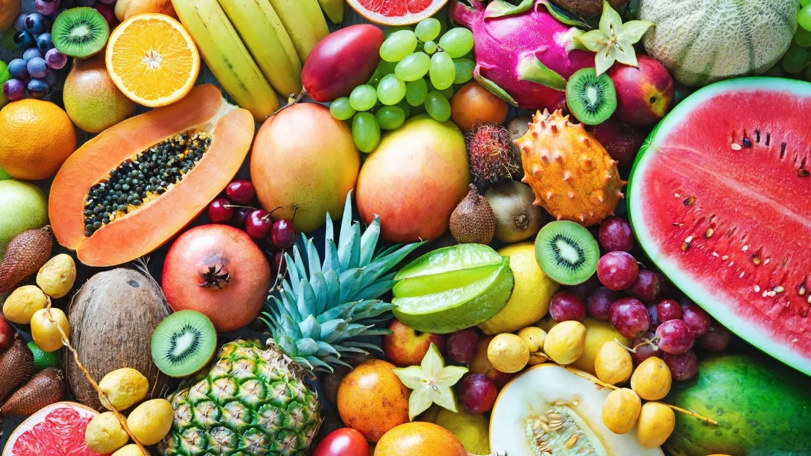
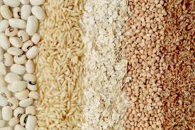

Fruits: Examples include apples, bananas, berries, and oranges. Fruits provide essential vitamins and fiber.
Vegetables: Examples include spinach, carrots, broccoli, and peas. Vegetables are rich in nutrients and fiber.
Grains: Examples include bread, rice, pasta, and oats. Grains provide carbohydrates for energy.
Protein: Examples include meat, poultry, fish, beans, and nuts. Protein helps build and repair tissues.
Dairy: Examples include milk, cheese, and yogurt. Dairy provides calcium and supports bone health.